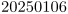

Contents
Summary
The command
\definedate
is used to define date formatting shortcuts
Settings
| \definedate[...][...,...] | |
| [...] | name |
| [...,...] | year year:name y y:name yy Y Y:name YY month month:mnem month:hebrew month:jalali m m:mnem m:hebrew m:jalali MONTH MONTH:mnem MONTH:hebrew MONTH:jalali mm M day day:name day:+ day:ord day:++ day:highord d d:name d:+ d:ord d:++ d:highord dd dd:+ dd:ord dd:++ dd:highord D D:+ D:ord D:++ D:highord weekday weekday:mnem weekday:hebrew weekday:jalali w w:mnem w:hebrew w:jalali WEEKDAY WEEKDAY:mnem WEEKDAY:hebrew WEEKDAY:jalali W referral space \\\\\\\\␣ text hebrew:to jalali:to jalali:from |
Description
The command
\definedate
defines date formatting shortcuts, allowing a bit of abstraction.
Examples
Example 1
-
\definedate[iso][year,mm,dd] \currentdate[iso]
- 
Notes
See also
- core-con.mkiv
- \date for details about formatting options
- \currentdate